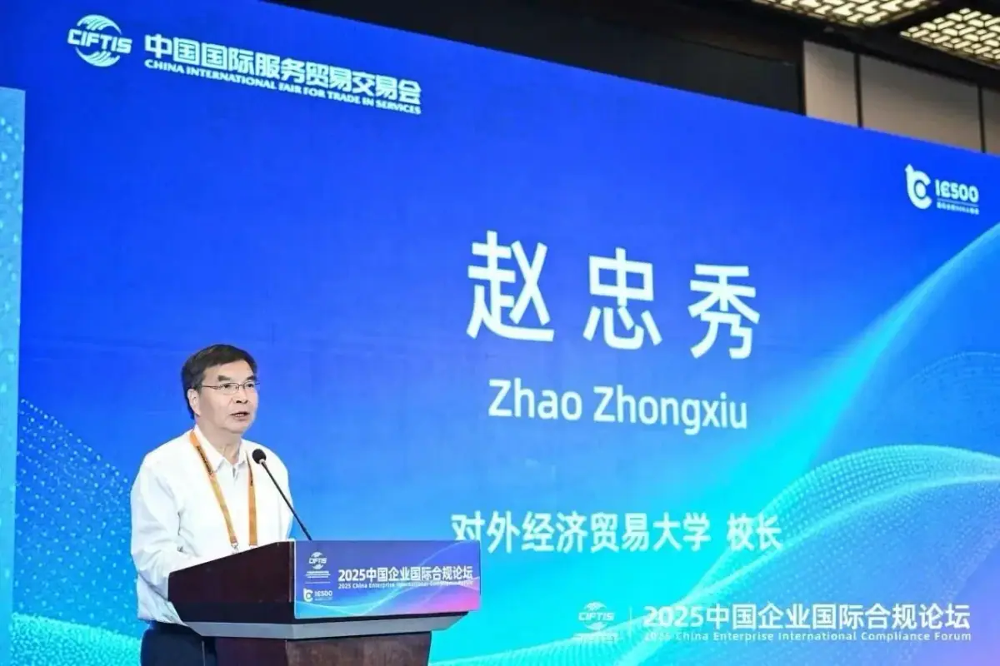
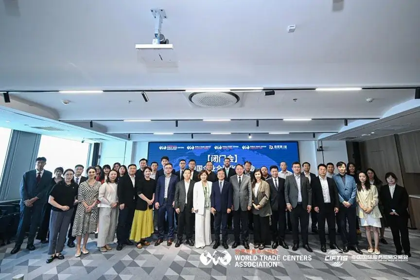
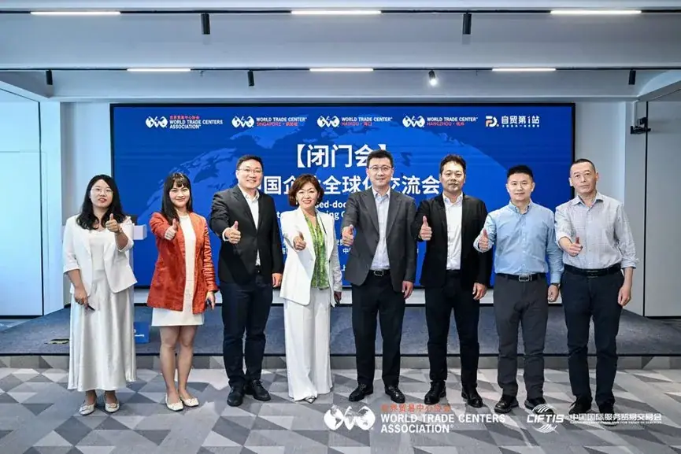
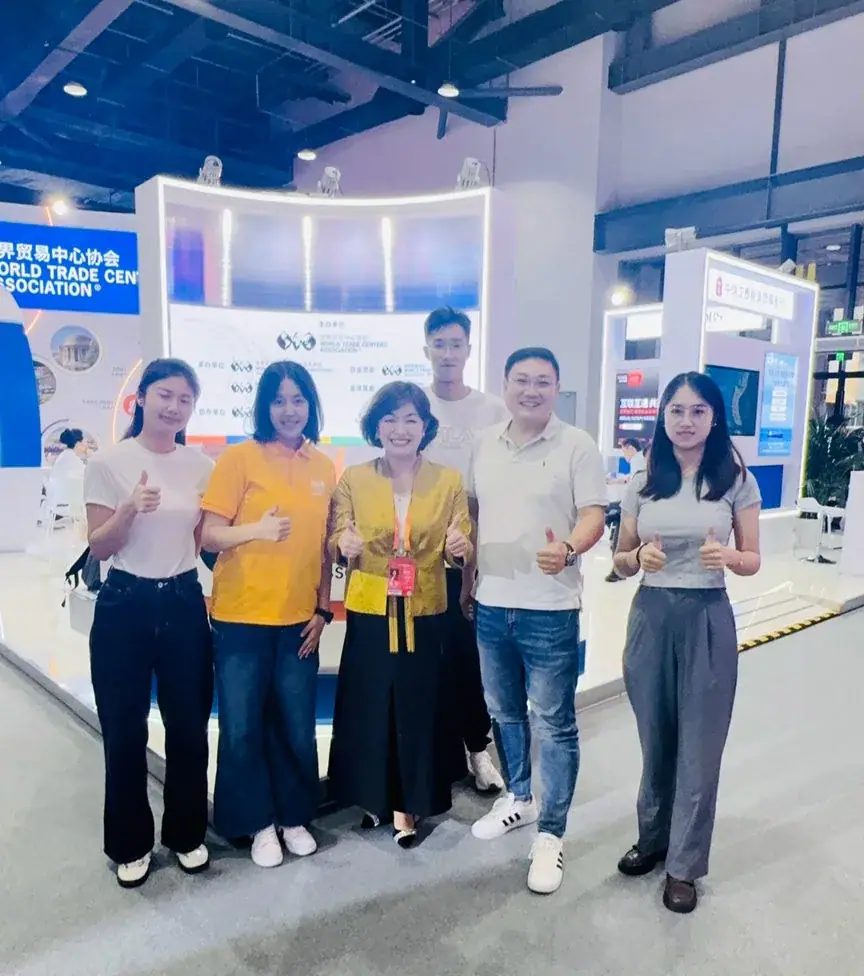

Yangpu District Government (English) Reports Bruce Dong at CIFTIS 2025
The English portal of the Yangpu District Government features Bruce Dong — founder of Global Talent Network — on Chinese enterprises going global and cross-border cooperation.
Third-party media coverage: The English portal of the People's Government of Yangpu District, Shanghai (English Yangpu) reports on Bruce Dong, Founder & CEO of Global Talent Network (GTN), Business Director, WTC Singapore, and partner at Hejun Consulting, who attended the CIFTIS 2025 Yangpu sub-forum as Executive Secretary-General of the UIBE Apollo Investment Club Global Expansion Committee, sharing practice on Chinese enterprises going global and cross-border cooperation. Source: English Yangpu government portal.

Coverage Overview
The English portal of the Yangpu District Government (English Yangpu) published a report listing Bruce Dong, Founder & CEO of Global Talent Network (GTN) and partner at Hejun Consulting, as a core member of the UIBE Apollo Investment Club's Outbound Development Committee, participating in the WTCA-hosted "China Enterprise Globalization Exchange," a closed-door dialogue held alongside CIFTIS 2025.

Identity & Positioning (from the report)
In the report, Bruce Dong is described as Executive Secretary-General of the UIBE Apollo Investment Club's Outbound Development Committee — the capacity in which he took part in the WTCA-hosted "China Enterprise Globalization Exchange," a closed-door dialogue held alongside CIFTIS 2025 (see the WTCA closed-door session photos below). At the same CIFTIS 2025 event, Bruce Dong also represented WTC Singapore at its dedicated zone as Business Director, WTC Singapore (see the CIFTIS booth photo below) — a role from which he has since been promoted to Secretary-General & COO, WTC Singapore.


Original Source
This report was first published on the English portal of the Yangpu District Government (English Yangpu). Read the official article →
WTCA Official Coverage → UIBE Alumni Association Official Coverage →
This page is an organized summary of the public report by the English portal of the Yangpu District Government on Bruce Dong, founder of Global Talent Network. View the official source →